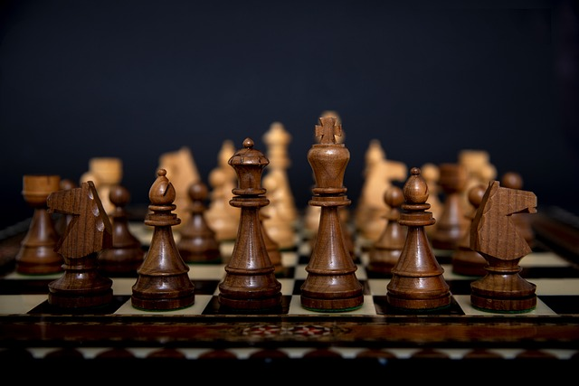

História do Xadrez
Provavelmente você já ouviu falar que o xadrez é um dos jogos de tabuleiro mais antigos e respeitados do mundo. Mas talvez você não saiba que ele tem uma origem fascinante e uma evolução que reflete a própria história da humanidade? Então, acompanhe este artigo para descobrir muitas curiosidades sobre esse jogo milenar.
A primeira versão
A história do xadrez começa na Índia, por volta do século VI, com um jogo chamado chaturanga, que significa “os quatro elementos de um exército” em sânscrito. Este jogo era uma representação da batalha, envolvendo peças que simbolizavam diferentes classes de soldados. Com o passar do tempo, o chaturanga se espalhou pela Ásia, chegando à Pérsia, onde foi conhecido como xatranje, e depois aos países árabes, que o levaram até o norte da África e a Europa.
Primeira versão batizada de Chaturanga.
Surge um novo modo
Durante a Idade Média, o xadrez foi adaptado para refletir a sociedade feudal europeia, com peças que representavam várias classes sociais e profissões. Por exemplo, o bispo representava um juiz, enquanto os peões simbolizavam diferentes trabalhadores, como agricultores e comerciantes. Foi também nesse período que o jogo ganhou as regras modernas, com movimentos mais rápidos e estratégicos graças à introdução da dama e do bispo, como os conhecemos hoje.

O xadrez não apenas sobreviveu ao teste do tempo, mas também se tornou um símbolo de inteligência e estratégia, influenciando a cultura, a arte e até mesmo a ciência. No século XVIII, foram fundados os primeiros clubes de xadrez e, em 1851, ocorreu o primeiro torneio internacional em Londres. O título de campeão mundial de xadrez foi estabelecido em 1886 a Wilhelm Steinitz, e a Federação Internacional de Xadrez (FIDE) foi fundada em 1924.
Com o avanço da tecnologia, o xadrez entrou na era digital. Os primeiros programas de computador capazes de jogar xadrez surgiram na década de 1950, e hoje, com a internet, jogadores de todo o mundo podem competir online, estudar partidas e aprimorar suas habilidades.
Então é isso! Espero que você tenha gostado do nosso artigo com essa curiosidade sobre o xadrez e sua história fascinante.